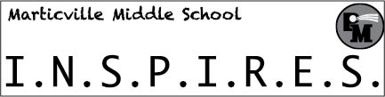

Julius Heiland's Bookmark Project for AENG 110 Class |
|||
| Home Video Project Photo Project Bookmark Project | |||
|  |
Home Video Project Photo Project Bookmark Project |
This project involved creating a bookmark on Adobe Indesign for Marticville Middle School. We had to create everything from scrath including the logo I made in the top right corner. These were then sent to the school for the students to use. After doing some research about the school, I decided on using their motto "I.N.S.P.I.R.E.S." because it helps them learn how to act in school. The acronym stands for I Need to Show Perseverance, Integrity, Respect, Empathy, and Safety. |
|
|
©2023 Julius Heiland | |||